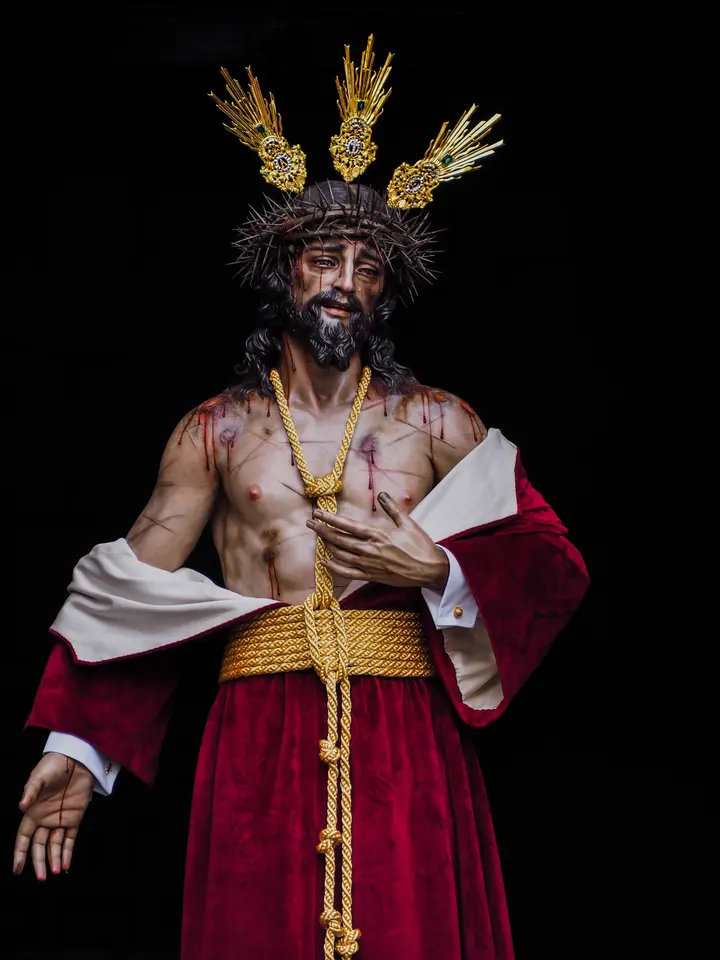

Nuestro Padre Jesús de la Lealtad
Despojado
Sed semetipsum exinanivit, formam servi accipiens
- Autores y año
- Juan Jiménez González y Pablo Porras Castro, 2021
- Representación
- Misterio del despojamiento de las vestiduras (X estación)
La talla representa a Cristo en la décima estación del Vía Crucis y preside la estación de penitencia del Martes Santo. Mantiene el peso sobre la pierna derecha, adelanta el lado izquierdo del torso y acerca la mano derecha al corazón mientras deja atrás la izquierda, subrayando el instante en que le retiran la túnica. De su meñique derecho pende una gota de sangre, simbolizada en el paso y en el altar por una rosa roja. Fue bendecida el 9 de octubre de 2021.